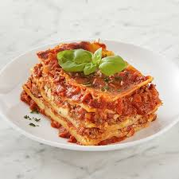

All-day Meat lasagna recipe
Home

Description of the dish
All meat lasagna features all meat sauces that are deep, rich and rib-sticking
The dish is made of a combination of lamb for flavor, pork for fat and veal for tenderness
Ingredients
- Lamb for flavor
- Pork for fat
- Veal for tenderness
- Few chicken livers
- ricotta made of whole milk cottage cheese
- hand rolled pasta
- Sangiovese-based wine
Steps needed to complete the dish
- Heat butter and olive oil in Oven then add meat when butter has stopped foaming, breaking up meat for 10 minutes. Cook and stir frequently until veggies are softened
- Return meat to pan then add tomatoes, wine, milk, stock and bay leaves. Reduce heat to low, and simmer for 2 hours. After cooking, remove bay leaves, add fish sauce and heavy cream until fat is emulsified. Stir in parsley and basil. Bolognese will improve with time
- Make the ricotta mixture while the ragu is simmering.
- Make the Besciamella, heat butter in medium heat then add garlic and stir to combine. Whisking constantly, add milk until fully incorporated
- Adjust oven racks and prreheat oven to 190 Celcius degree. Place lasagna and cove with hot tap water, changing water once during soaking time
- Place foil lined rimmed baking sheet on lower rack to catch drips, then place lasagna on upper rack and bake until edges are starting to crisp, and top is a bubbly, golden brown, about 45 minutes. Remove from oven and cool at room temp for 10 minutes.